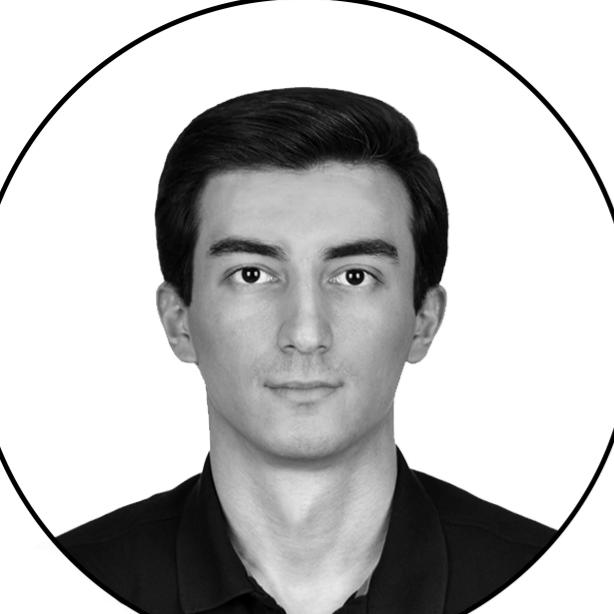

Cavid Balayev
Architect — Istanbul, Türkiye
Work permit holder · eligible to work in Türkiye

+90 552 542 60 31
cavid.b.017@gmail.com
linkedin.com/in/cavid-bv000
cavid017.github.io
Levent, İstanbul
Profile
Istanbul-based architect with 1.5+ years of professional experience, contributing to cultural, residential and social-housing developments alongside infrastructure projects, from design through on-site construction. Currently Site Architect on the Kent Etiler residential development, built in partnership with Mesa and ASL, supervising structural works, quality control and on-site delivery.
Pairs hands-on site execution — formwork, reinforcement and concrete works, in-situ quality control, and contractor coordination — with construction documentation and high-quality architectural visualisation, applying commercial awareness across quantity take-offs and progress payments.
Experience
UMA Infrastructure & Construction2026 Jun – Present
Site Architect
Istanbul
- Site Architect on the Kent Etiler residential development, built together with Mesa and ASL.
- Supervise structural site works — formwork, rebar fixing and concrete casting — checking fabrication against approved drawings and technical specifications before handover.
- Coordinate across project teams and compile quantity take-offs and progress-payment records for completed works.
Protean Construction
Site Architect2025 Jul – 2026 May
Baku
- Led on-site architectural supervision on residential-building and road-construction projects.
- Oversaw foundation formwork, steel reinforcement and concrete-pouring works with in-situ quality control and handover to the main contractor.
- Prepared quantity take-offs and progress payments.
Junior Architect2025 Jan – 2025 Jun
Istanbul · Remote
- Produced architectural and technical drawings, developing designs from concept to detail.
Başyapı – İnkosa Business Partnership2024 Sep – 2024 Oct
Intern Site Architect
Istanbul
- Provided support for on-site inspections of infrastructure projects, assisting with drawing verification and field coordination.
BINAA — Building Innovation Arts Architecture2024 Jun – 2024 Aug
Intern Architect
Istanbul
- Assisted with architectural project drawings and 3D modelling, producing renders and visualisations for design presentations.
Berko Construction2023 Aug – 2023 Sep
Intern Site Architect
Istanbul
- Gained on-site experience on the construction of a Medipol Hospital building, following structural works and supporting site coordination.
Uysalkan Architecture2019 Sep – 2019 Oct
Intern Architect
Istanbul
- Prepared detail drawings, presentation layouts and material research, supporting facade and interior design studies.
Education
Yildiz Technical University2017 – 2025
Bachelor of Architecture (B.Arch)
Istanbul
Baku State School2006 – 2017
High School Diploma
Baku